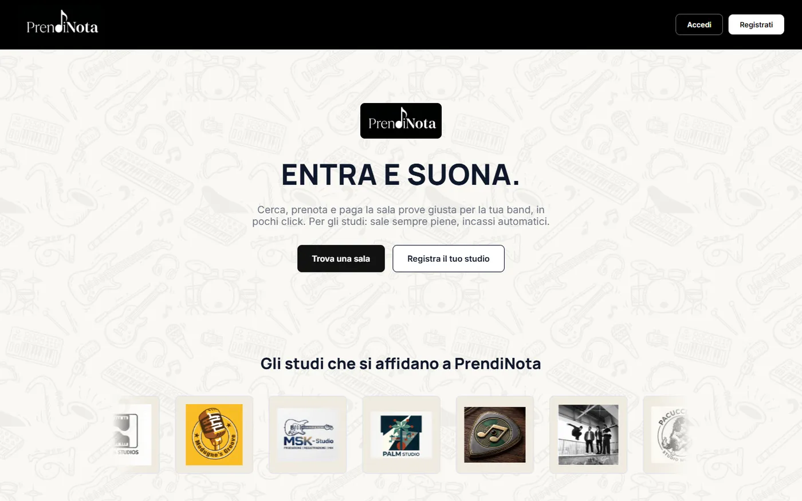
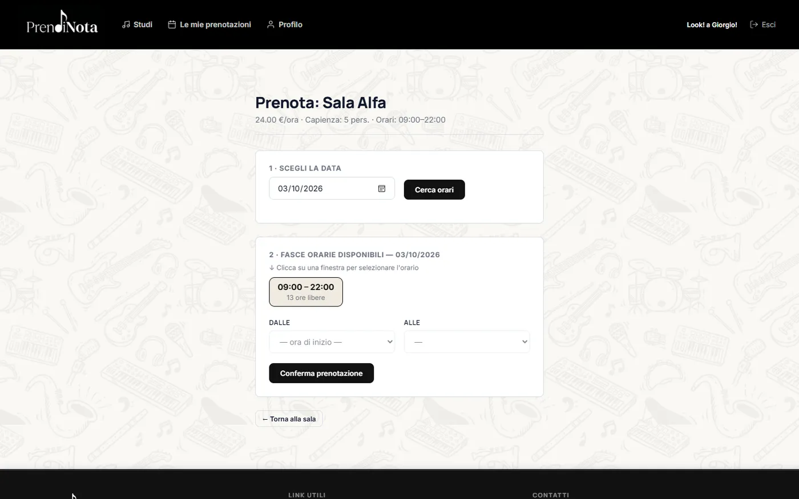
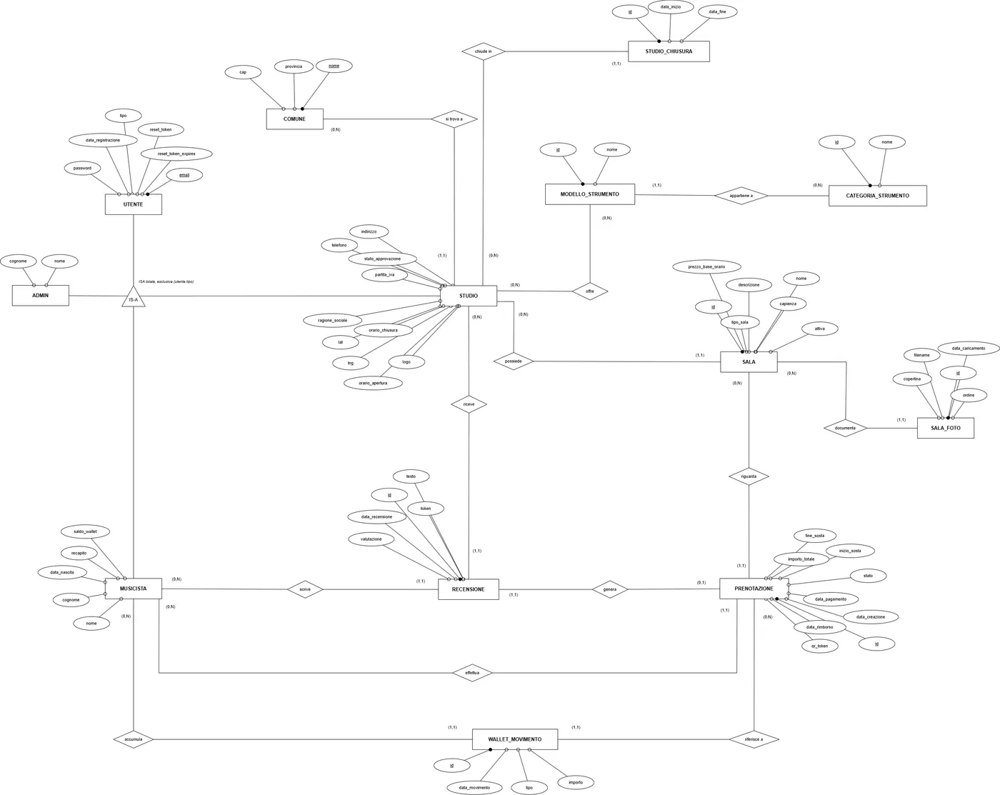

University project · 30/30 cum laude
PrendiNota
A booking platform for music rehearsal rooms in the province of Bari.
- Problem
- Bands need an equipped rehearsal room at a given hour. Studios want their rooms booked and paid for without handling every request themselves.
- Approach
- Requirements for three roles, BPMN and UML models of the booking process, an ER model, then the app. PostgreSQL triggers enforce the rules that must never break (no overlapping bookings, opening hours, closure days), so the database rejects bad data even if the app misses a check.
- Result
- A working platform: slot search, Stripe test payments, QR check-in, a wallet with a 24h refund/penalty policy, unpaid bookings released after 15 minutes, and admin approval of studios.
- PHP 8 · CodeIgniter 4
- PostgreSQL · PL/pgSQL
- Stripe
- BPMN · UML · ER